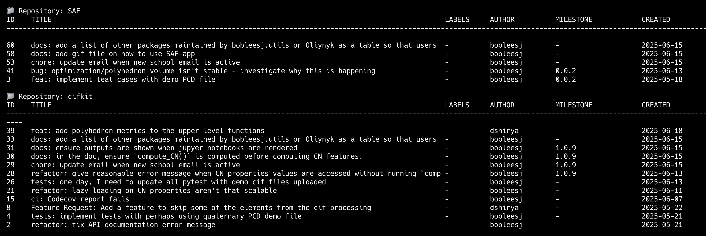

Development workflows
Here I document the workflows and commands I use in practice to develop and maintain software projects. Many of the commands are aliased to make them easier to remember and use. You can find the full list of commands in How to use keyboard shortcuts in your CLI.
Tools I use daily
Category |
Tools |
|---|---|
IDE |
Visual Studio Code |
Version control |
Git, GitHub CLI, GitHub |
CLI |
Warp |
Development productivity |
|
CLI shortcuts |
|
GitHub pull request
Make a new pull request
Type
gsub <branch-name>orgsob <branch-name>to sync withorigin/mainorupstream/mainand create a new branch.Make changes to the codebase.
Type
gsto see the overall changes.Type
gcam "<Add commit message>"to commit files already tracked. If the files are not staged, rungit add <file-or-folder>then rungcm "<Add commit message>".Type
ptcto runpytestandpre-commit run --all-filesto ensure everything is working correctly.Type
napr "<Add news file>."to create a new news entry innews/<branch-name>, stage, commit, and push the changes, and make the PR title the news content. To submit the PR right away, typenaprf "<Add news file>."
Modify a pull request
Imagine you have a pull request (PR) that has been created but needs some modifications or review comments addressed.
Type
gplto list the PRs.Type
gpch <PR-number>.Address the review comments and make changes.
Type
gcam "<Add commit message>"to add a commit message for the changes made in response to the review comments.Type
ptcto run pytest and lint.Type
gsto see the overall changes and ensure all changes are staged and committed.Type
git push.
Create a new branch after a pull request is merged
Imagine the PR has been merged. Now you want to sync with the latest changes in main and create a new branch for the next feature or bug fix.
Type
gsub <branch-name>to sync withupstream/mainand create a new branch. If you want to sync withorigin/main, typegsob <branch-name>.
GitHub task management
Create issues
If you are working alone and need to quickly create an issue,
cdinto the project directory and typegi <Descriptive issue title>to create and submit an empty issue with the given title. This is useful when the title is descriptive enough and a description is not required.If you need to submit the same issue across multiple GitHub repositories, type
bci(bob create issues) to create an issue with a description. You need to definedev_dir_pathin~/.bobrcto point to the directory containing your GitHub repositories. To set up~/.bobrc, refer to the Getting started section ofbobleesj.utilsIf you want to submit a detailed issue to communicate and persuade your collaborators, if you are already on the project, type
ghbito visit the issues page. If you just opened your Terminal, typeg<proj-name>ito open the GitHub issue page of the project. On the issue page, pressCto create a new issue. Use thetabkey to choose the template, then enter the title and description. Preview your rendered markdown usingshift-P. To submit, pressshift-cmd-enter.
View issues
Type
bli(bob list issues). You need to definedev_dir_pathin~/.bobrcto point to the directory containing your GitHub repositories. To set up~/.bobrc, refer to the Getting started section ofbobleesj.utils

GitHub notifications
In your terminal, type
gnto visit the GitHub notifications page. If you are already on GitHub, typeG-Nto visit the notifications page.Use the
JandKkeys to navigate through the notifications. Pressoto open a notification.To reply, press
R. To submit the reply, presscmd-enter. Then, to mark the selected page (PR or issue) from the notification asdone, pressE.To select multiple notifications, use
JandKto navigate and pressXto select. Then, you may pressshift-Uto mark as unread andshift-Ito mark as read.
Release workflow
Assume forking workflow and you are doing the release on your own.
Type
mto switch tomainand pull the latest change.Type
gtu <version-rc.0>to upload a pre-release tag toupstream.Type
test <package-name> rcto install and test the pre-release version on PyPI.Type
gtu <version>orgto <version>to release the package toupstreamororigin.Type
test <package-name>to install the full release version from PyPI and run tests.Type
package update conda-forgeto update the feedstockmeta.yaml.Type
testcf <package-name>to test the conda-forge package in a new conda environment.Close the release issue.
Update documentation workflow without a release
This is for scikit-package Level 5 projects.
Stage and commit the changes. Then run
gdto push the changes tomainand run the GitHub Actions workflow to update the documentation.
How to use keyboard shortcuts in your CLI
Note
If you are a Windows user, install “Git for Windows” from https://git-scm.com/download/win.
Ensure you have
GitHub CLIinstalled. Runghto check if it is installed. If not, install it by following the instructions at https://cli.github.com/manual/installation.In Visual Studio Code, press
cmd-shift-pand typeShell Command: Install 'code' command in PATHto enable thecodecommand in your terminal.Ensure you have
scikit-packageandbobleesj.utilsinstalled.Type
code ~/.bashrcto open~/.bashrc.Copy and paste the following commands into your
~/.bashrc.# Navigate (Replace with your actual path and conda environment) alias dev='cd <path-to-the-directory> && mamba activate <env-name>' alias gn='open https://github.com/notifications' # bobleesj.utils alias bdlb='bob delete local-branches' alias bci='bob create issues' alias bli='bob list issues' # One letter commands alias c='code .' alias l='git log' alias b='git branch' alias g='open https://github.com' alias d='sphinx-reload doc' alias c='code .' alias m='git checkout main && git pull upstream main' # bashrc alias sc='code ~/.bashrc' alias ss='source ~/.bashrc' # git alias ga='git add' alias gc='git checkout' alias gpsh='git push' alias gp='git pull' alias grau='git remote add upstream' alias grao='git remote add origin' alias gpso='git push --set-upstream origin' alias gfa='git fetch --all' alias grv='git remote -v' alias gcm='git commit -m' alias gcam='git commit -a -m' alias gce='git commit --allow-empty -m "ci: re-run CI with empty commit"' alias gcb='git checkout -b' alias gpum='git pull upstream main' alias gpo='git push origin' alias gl='git log' alias gs='git status' alias gd='git diff' alias gb='git branch' alias gr='git restore' # For a new branch, set upstream to origin and push alias gpsuo='git push --set-upstream origin $(git rev-parse --abbrev-ref HEAD)' # Sync with main and create a new branch alias gsub='gc main && git pull upstream main && gcb && c .' alias gsob='gc main && git pull && gcb && c .' alias gdsub='gc main && bdlb && git pull upstream main && gcb' alias gdsob='gc main && bdlb && git pull && gcb' # GitHub CLI alias gpcr='gh pr create' alias gpl='gh pr list' alias gpch='gh pr checkout' alias gpvw='gh pr view --web' alias gil='gh issue list' alias ghb='gh browse' alias ghbi='gh issue list --web' alias gpv='gh pr view' alias gbd='gh workflow run publish-docs-on-release.yml' alias gbds='gh run list --workflow=publish-docs-on-release.yml' # Combined alias gpsuop='gpsuo && gpcr' # Create news file, add, commit, push, and create PR with the same news title. _make_pr() { TOOL="$1" # e.g. "na" (which is aliased to a full package command) TITLE="$2" # PR title FILL_FLAG="$3" # "fill" or empty eval "$TOOL \"$TITLE\"" || return 1 git add news/ || return 1 git commit -m "news: $TITLE" || return 1 BRANCH=$(git rev-parse --abbrev-ref HEAD) git push --set-upstream origin "$BRANCH" || return 1 if [ "$FILL_FLAG" = "fill" ]; then gh pr create --title "$TITLE" --fill else gh pr create --title "$TITLE" fi } # scikit-package alias na='package add news -a -m' alias nf='package add news -f -m' alias nc='package add news -c -m' alias nr='package add news -r -m' alias nd='package add news -d -m' napr() { _make_pr "na" "$1" ""; } naprf() { _make_pr "na" "$1" "fill"; } nrpr() { _make_pr "nr" "$1" ""; } nrprf() { _make_pr "nr" "$1" "fill"; } nspr() { _make_pr "ns" "$1" ""; } nsprf() { _make_pr "ns" "$1" "fill"; } ncpr() { _make_pr "na" "$1" ""; } ncprf() { _make_pr "na" "$1" "fill"; } ndpr() { _make_pr "nd" "$1" ""; } ndprf() { _make_pr "nd" "$1" "fill"; } gict() { gh issue create -t "$1" -b "" } gi() { gh issue create -t "$1" -b "" } gto() { TAG="$1" git tag "$TAG" && git push origin "$TAG" } gtu() { TAG="$1" git tag "$TAG" && git push upstream "$TAG" } # Python, pip, conda (mamba) alias pi='pip install' alias pir='pip install -r' alias pie='pip install -e . && pip install -r requirements/test.txt' alias mi='mamba install \ --file requirements/test.txt \ --file requirements/conda.txt'\ alias ma='mamba activate' alias mao='mamba activate ophus-env' alias mab='mamba activate bob-env' alias mcn='mamba create -n' mce() { folder_name=$(basename "$PWD") env_name="${folder_name}-env" mamba create -y -n "$env_name" python=3.13 \ --file requirements/test.txt \ --file requirements/conda.txt \ --file requirements/docs.txt && \ mamba activate "$env_name" && \ pip install -e . } # Combined alias pt='pytest' alias pc='pre-commit run --all-files' alias ptc='pytest && pre-commit run --all-files' alias pb='python -m build' alias pd='git push && gbd' # cookiecutter alias cc='cookiecutter .' # Test release process test() { PKG="$1" MODE="$2" ENV_NAME="${PKG}-${MODE:-stable}" echo "🔧 Creating environment: $ENV_NAME" mamba create -y -n "$ENV_NAME" python=3.13 || return 1 echo "🚀 Activating environment..." mamba activate "$ENV_NAME" || return 1 echo "📦 Installing $MODE version of $PKG..." if [ "$MODE" = "rc" ]; then pip install --pre "$PKG" || return 1 else pip install "$PKG" || return 1 fi echo "📄 Installing requirements/test.txt..." mamba install -y --file requirements/test.txt || return 1 echo "🧪 Running tests with pytest..." pytest } # Test conda-forge testcf() { PKG="$1" MODE="$2"\ ENV_NAME="${PKG}-stable" echo "🔧 Creating environment: $ENV_NAME" mamba create -y "$ENV_NAME" PKG || return 1 echo "🚀 Activating environment..." mamba activate "$ENV_NAME" || return 1 echo "📄 Installing requirements/test.txt..." mamba install -y --file requirements/test.txt || return 1 echo "🧪 Running tests with pytest..." pytest }
Run
source ~/.bashrcto apply the changes.To add or modify commands, type
scto open~/.bashrcin Visual Studio Code, make your changes, and save the file.To apply the changes, instead of running
source ~/.bashrc, typessto apply the changes to your current terminal session.